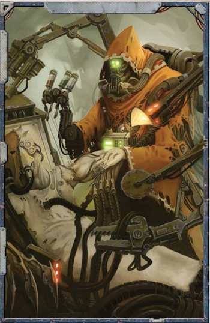

“你们的恐惧、你们的痛苦、你们的煎熬。这些都归我们所有。”
——枯刃斗教箴言
试炼和初次战斗结束后，探险者们真正的奴隶生涯便开始了。到目前为止，他们只有机会展示自己的战斗能力，但在为枯刃斗教执行其他任务时，那些擅长言辞而非武力的角色同样有发挥空间。枯刃斗教乐于羞辱有本事的战士，包括强迫他们做杂役，因此他们并不严格区分普通奴隶和角斗士，除非是那些在竞技场外难以控制的战士。任何战士都可能被叫去拖走竞技场中的尸体或擦洗刑架上的血迹，正如任何没有战斗能力的奴隶也可能被扔进竞技场去杀死一头卡诺龙，手里只有他正在清洗的手术刀。因此，在不参加竞技坑战斗的时候，探险者可以自由出入影脊竞技坑的大部分区域（其本身便是一座巨型监狱），接触其中的其他囚犯，并可能被召唤为他们的黑暗主人执行各种令人厌恶的差事。
在冒险的这一阶段，探险者可以在影脊竞技坑中相对自由地活动，黑暗灵族狱卒只关注特定区域的安全以及竞技坑的出入口。如何利用他们在竞技场内外所获得的影响力，取决于探险者自身的巧妙操作。
试炼结束后，主持人首先要做的，是让探险者们熟悉他们作为枯刃斗教奴隶的新生活，确保他们了解自己被囚禁的处境细节，以及这对完成任务所带来的困难与机遇。玩家们无疑迫切想要逃脱，策划起义的机会也很快就会出现。与枯刃斗教领地内的NPC见面、参加竞技场战斗、为俘获者执行各类任务，都会推动这一进程，也能让主持人不露痕迹地向玩家传递信息，省去他们事无巨细地自行打探的麻烦。
自由之梦
探险者们一旦意识到自己落入了黑暗灵族之手，几乎立刻就会开始琢磨逃跑的办法。但他们的核心使命并未改变，仍然必须在叛军舰队抵达并发动进攻之前，从裂爪阴谋团的金字塔中“解放”灵魂掠夺者。如果失败，萨莱恩的计划便无法推进，他们预期中的交易和利润也将化为泡影，更不用说弥补之前付出的代价了。主持人在这一阶段应明确传达一种信息：第一次尝试受挫并不意味着失败，这只是一个暂时的曲折，是换个角度解决问题的机会，也是一道需要跨越的障碍。让探险者有机会结识新盟友、打开新局面、制定偷取灵魂掠夺者的新计划，有助于提醒他们：即使身处逆境，他们仍然是自身命运的主宰。
通往自由的第一步，是遇见多莫斯·阿涅莱恩。探险者结识这位德高望重的技术神甫之后，便可以认真筹划逃脱的事宜。他掌握着大量关于枯刃斗教的情报，并能提出不少可行的计划。他还会明确告知探险者：紧闭的大门和高耸的坑壁，加上巫灵和阴谋团武士的巡逻，使得手无寸铁的奴隶发动正面进攻无异于自寻死路，他们必须做好充分的准备，等待最佳时机。
多莫斯告诉探险者，他一直渴望自由，尤其是自由探索盖兰天球及其众多神秘技术奥秘。尽管没有力量付诸行动，他早已反复思考过无数种逃跑方案。他告诉探险者们，要想真正逃离，他们需要武器、其他有能力的奴隶的支持，以及足够大的混乱来转移注意力。
朗读或转述以下内容：
那堆古老的锈迹，曾经或许是一位火星神甫，因你提到逃脱而苏醒过来。他急促地咯咯作响，似乎在对自言自语。“我们这儿有什么，普里迪乌斯？这真的是回归万机神光辉拥抱的道路吗——什么？不，我们现在没有时间去思考那些公式，我的朋友！我们必须行动！”他以出人意料的敏捷开始移动，检查着探险者们，偶尔戳戳捅捅，然后停了下来，显然很满意。“确实。正如普里迪乌斯所说，你们有着一副吉相，他建议我，我们逃脱的概率性机会从未如此之高。我对此事的思考也一致。你们能做到——你们能策划我设想中的起义。你们的成功几率相当可观。你们将得到我的帮助——当然还有普里迪乌斯的全力协助，尽管他有时有点刻薄。”
多莫斯详细说明，解释了他们的一些选择。首先，他解释说，即使他们是奴隶，他们也可以赢得枯刃斗教的好感度，并利用这种影响力来帮助他们策划叛乱。他凭借自己的用处在地狱般的环境中生存了数十年，如果探险者在竞技场中赢得荣耀，或在围绕竞技场的诡谲社交圈中赢得青睐，他们便可以利用这种社会货币，以微小但重要的方式推进他们的计划。
多莫斯首先建议，他们应当发动奴隶起义，这需要争取某些关键人物站到他们一边。他还提出，为起义本身获取武器，可以通过赢得竞技场某位赞助者的外部支持，或查明武器库存的位置来实现。最后，他明确指出，信息是他们挣脱自由的关键，虽然他能提供关于影脊竞技坑布局和组织的基本信息，但任何禁区密码、巡逻守卫信息或开启兽栏的密码，都可能对他们的胜利至关重要。
遗憾的是，正如多莫斯所指出的，所有这些都可能需要一些时间，而目前探险者需要参与枯刃斗教的邪恶游戏，以实现他们的计划。因此，本节的时长可以由主持人根据玩家角色的行动来决定，可长可短，最终在探险者认为自己已做好准备、已为自己争取到最大成功机会时达到高潮。
主持人指导：血匠多莫斯

多莫斯·阿涅莱恩，被奴役的机械教贤者，是冒险这一部分的重要NPC，也是探险者在枯刃斗教的角斗士和奴隶中能够结交的最重要的盟友。多莫斯来到盖兰天球是为了寻找远古科技和一个失落时代的秘密，但他找到的只有奴役和痛苦，其中最令人煎熬的莫过于他知道无数秘密和失落的古代科技遗迹就在他脚下，却无法去探索。多年来，他一直在枯刃斗教的奴役下受苦，他的技艺被用来修复角斗士，为黑暗灵族改造天球的机器。他独自一人无法逃脱，一直在等待重返帝国的机会，或者更好的选择是重返他对天球的研究。多莫斯可以帮助探险者成为本章末尾起义的催化剂，并在领导奴隶反抗黑暗灵族、点燃阴影枢纽的战火方面提供重要帮助（这也会意外地给玩家角色提供再次偷取灵魂掠夺者的绝佳机会）。当探险者第一次来到竞技坑时，他们就会遇见他，并且很快就会明显看出，他是这里最年长、最受尊敬的奴隶之一，同时也是最疯狂的人之一，尽管这种疯狂相对无害，他会在缝合病人伤口或用废旧材料为肢体无法保全的人制作临时义肢的同时，与他已故的导师“普里迪乌斯贤者”进行频繁的“对话”。
多莫斯是探险者在枯刃斗教奴隶中首要的联络人和盟友，他可以引导玩家角色制定逃脱计划，并帮助他们联合奴隶反抗黑暗灵族。他还可以为探险者提供武器和异形技术，在他们于竞技场中受伤时为他们治疗，制作某些常见的物品，甚至可以在肢体或器官受损或毁坏时进行替换，不过这对玩家角色来说意味着用多莫斯所能捡拾到的各种奇怪装置来替换残破的手臂、腿或眼睛。由于他极度缺乏物资，由这位机械神甫制作的任何物品，包括机械义体替换物，都算作劣质工艺。如果多莫斯能获得更好的材料，他便能制作更好的物品。
主持人指导：萨莱恩的行动
在被黑暗灵族俘虏之后，探险者们或许有理由怀疑萨莱恩现在身在何处，以及她为何不立刻赶来救援。当然，精明的探险者可能会正确推测，这种英雄主义行为对黑暗灵族来说是不可接受的，但对这些异形狡诈本质不太了解的人，可能想知道她为何不向探险者们提供援助，毕竟他们对她的计划成功至关重要。
通过他们安放在灵魂掠夺者上的装置，萨莱恩观察到了他们的失败和被俘，她已经开始调整计划以应对这一新发展。主持人可以让她在探险者被囚禁期间提供援助，派遣工具或信息帮助他们逃脱，但她非常小心，不会把自己置于直接危险之中。主持人也可以选择让萨莱恩保持沉默。他们可能在竞技场的看台上瞥见她，试图争取在场某个派系的支持，或者他们根本见不到她。无论哪种结果，都很容易加剧他们对萨莱恩可能背叛的怀疑。